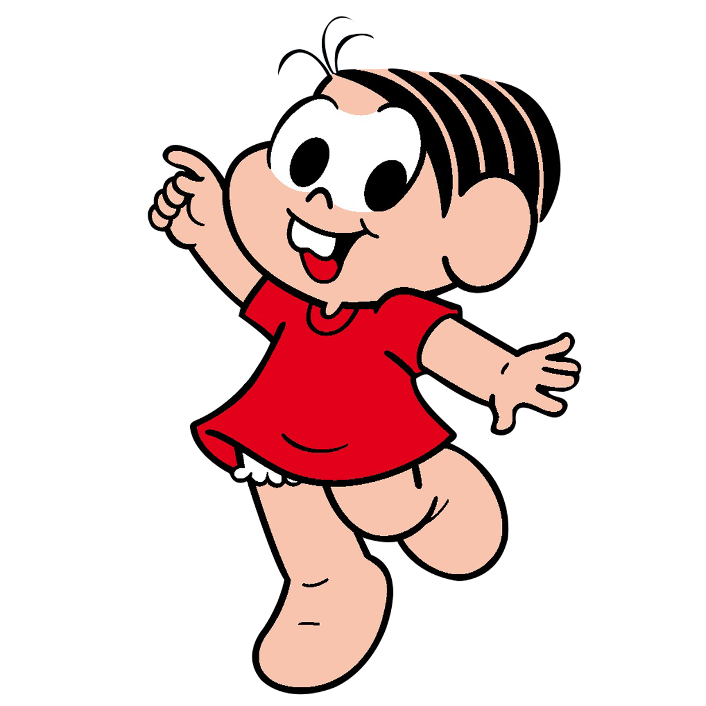

Turma da Mônica
Turma da Mônica é uma série de histórias em quadrinhos e uma franquia de mídia produzida pela Maurício de Sousa Produções, criada pelo cartunista e empresário Mauricio de Sousa.


Turma da Mônica é uma série de histórias em quadrinhos e uma franquia de mídia produzida pela Maurício de Sousa Produções, criada pelo cartunista e empresário Mauricio de Sousa.